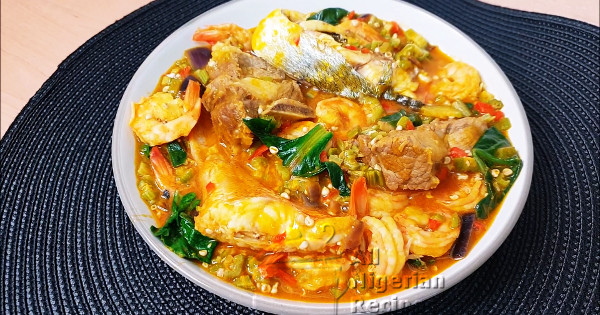

Okra Soup

A dish of okra soup with assorted seafood
Made from fresh okra, vegetables, palm oil, seasonings and assorted seafood. It is a common
stapple in amny parts of West Africa and among other Afro-centric communities around the world
Best served with mousels of eba, starch or pounded yam
Ingredients
- Fresh okra
- Vegetables
- Palm Oil
- Seasonings
- Assorted Meats
- Locust Beans
Recipe Instructions
- Add the seafood to a clean pot and cook till soften
- Add some palm oil to the mix
- Add pepper as desired
- Add the chopped okra int the mixture
- Cook for a few minutes
- Add seasonings and salt to taste
- Add the chopped and washed vegetables
- Allow to simmer for a few minutes and serve hot